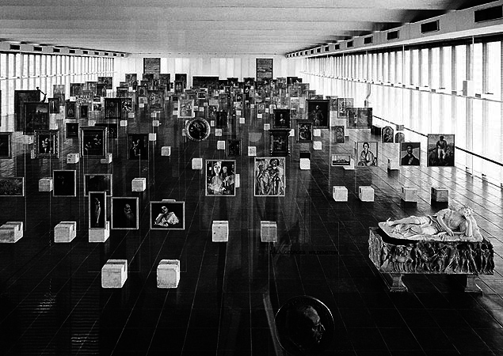
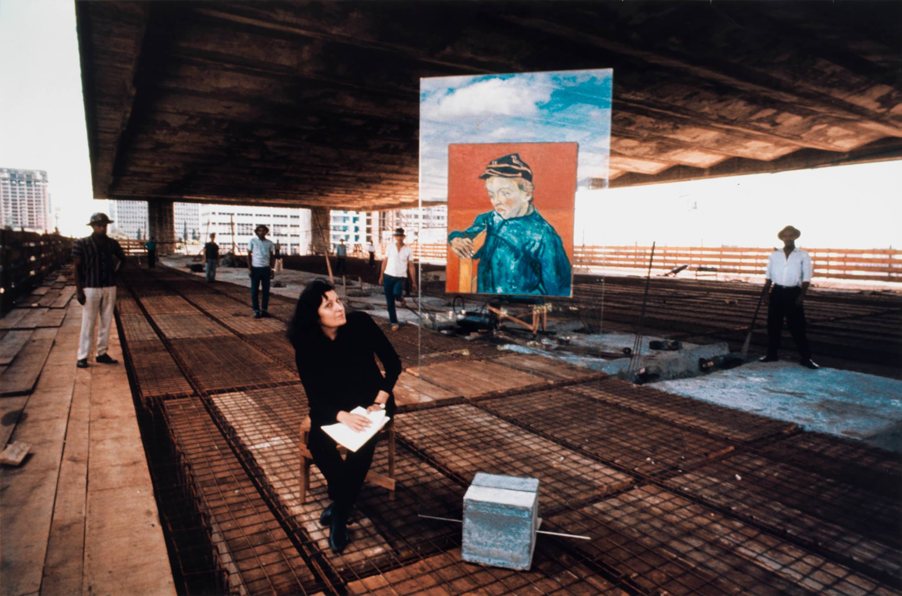
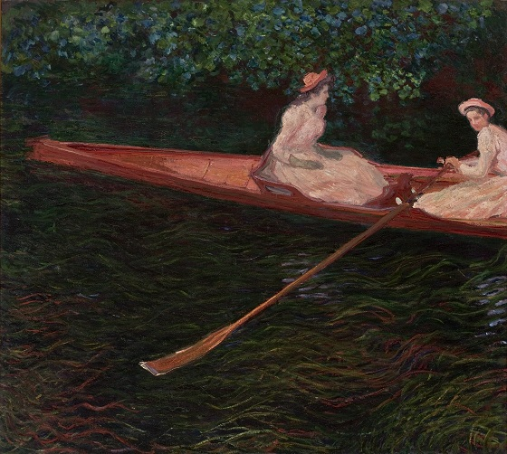

Museu de arte de São Paulo
Arte,
espaço
e corpo.

Exposição Atual
MÁRIO
DE ANDRADE:
DUAS VIDAS
A ideia de “duas vidas”, subtítulo desta exposição, aparece em diversos escritos do autor e exalta a dualidade vivida por Andrade, entre a vida profissional e pessoal. “Mário se qualifica ora como um 'vulcão controlado', ora tomado por uma 'feminilidade passiva'; oscila entre ser um pansexual casto (!) e um monstro libidinoso”, ressalta Teixeira de Barros. Em carta para Oneyda Alvarenga, o intelectual afirma: “Eu sou um ser como que dotado de duas vidas simultâneas, como os seres dotados de dois estômagos. O que mais me estranha é que não há consecutividade nessas duas vidas”.
Ver exposição
Acervo

Arquitetura

Programação
Um espaço para experiências artísticas contemporâneas.
O MASP promove exposições, encontros e ações culturais voltadas à experimentação estética e ao diálogo entre arte, cidade e sociedade.